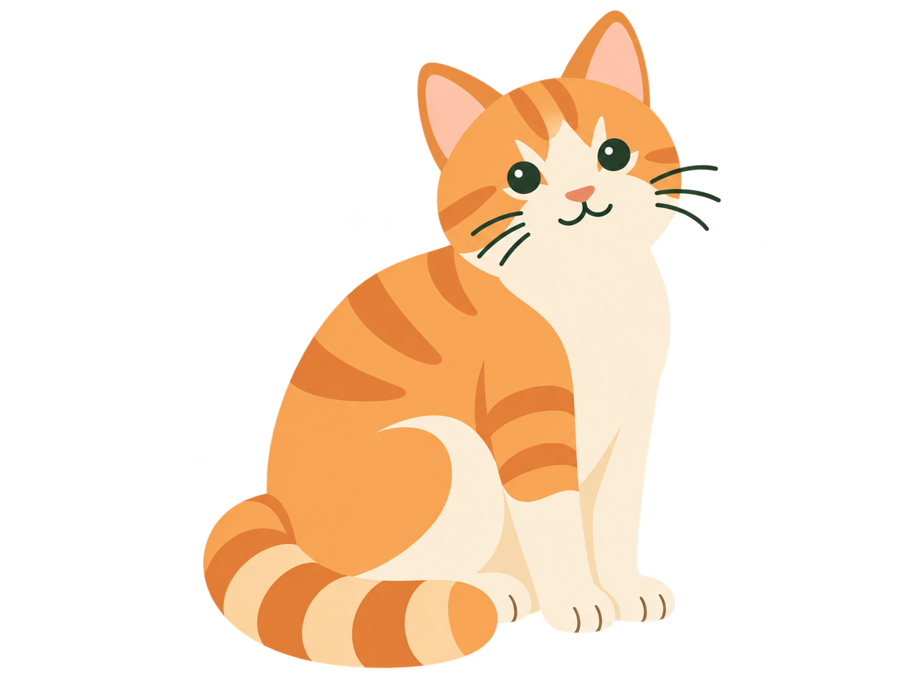
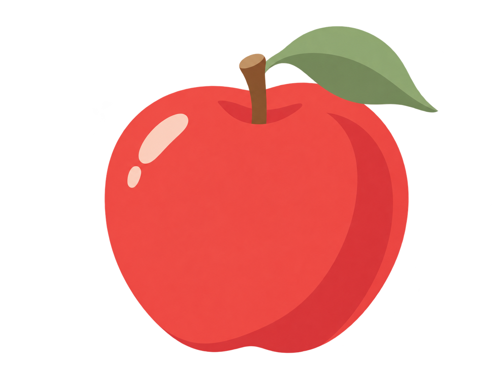

그림카드 앞면01 / 15
일본어로 무엇일까요?
그림을 보고 일본어 읽기를 떠올려 보세요.
화면 배치 참고 · 동작이 없는 디자인 예시A LITTLE, EVERY DAY
크림색 종이와 초록빛 잉크,
그리고 단어의 뜻을 담은 작은 그림들.

まいにち、すこしずつ。PICTURE CARD COLLECTION
부드러운 색면, 꼭 필요한 디테일.
그림 속에는 정답 글자를 넣지 않았어요.

위의 단어·뜻은 디자인 검토용 설명입니다. 실제 학습 카드 앞면에서는 숨기고, 뒤집은 다음에 표시합니다.
ONE CARD, ONE FOCUS
그림을 보고 일본어 읽기를 떠올려 보세요.
화면 배치 참고 · 동작이 없는 디자인 예시DESIGN NOTES
투명한 그림을 카드의 연한 배경에 얹습니다. 고양이의 귀나 학교 지붕이 잘리지 않도록 전체 그림을 보여주고, 주변 여백으로 크기를 맞춥니다.
THE EVERYDAY PALETTE
SCREEN DESIGN · 02
장식을 줄이고 여백과 글자 위계를 통일한 PC·모바일 화면입니다. 클로드 적용 가이드